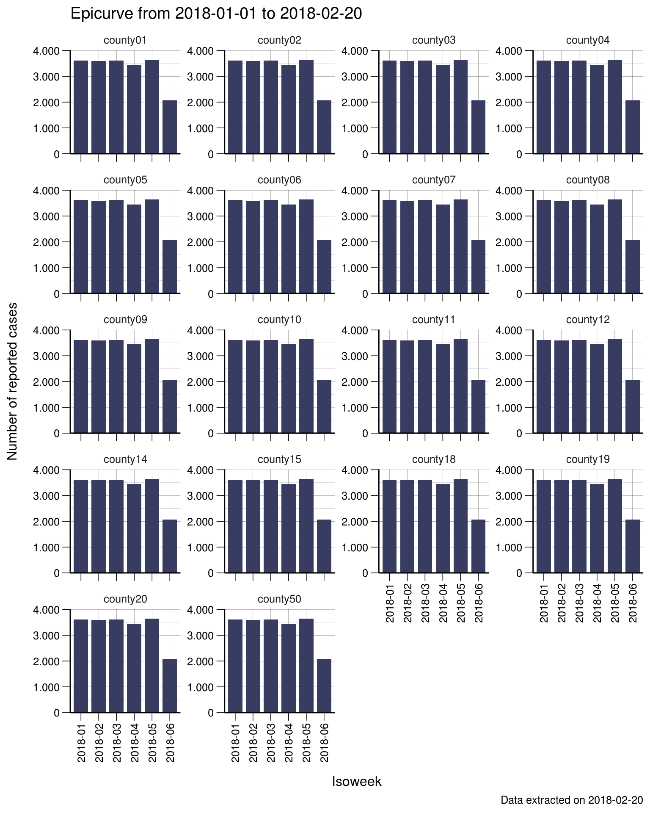
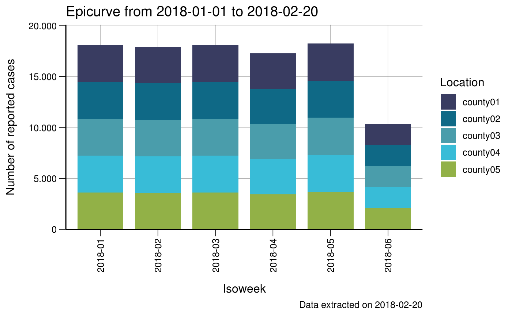

Epicurves
Richard
2019-06-24
epicurves.Rmdlibrary(ggplot2)
library(data.table)
library(fhiplot)
#> PACKAGE: fhiplot
#> Version 2019.06.24 at 08:35
#> Developed by Richard White, Norwegian Institute of Public HealthData
We generally start with a linelist dataset (make sure it is a data.table!).
set.seed(4)
dates <- sample(seq.Date(as.Date("2018-01-01"), as.Date("2018-02-08"), 1), 20000, replace = T)
d <- expand.grid(
location_code=unique(fhidata::norway_locations_current$county_code),
date = dates
)
# Convert to data.table
setDT(d)
# print
print(d)
#> location_code date
#> 1: county01 2018-01-11
#> 2: county02 2018-01-11
#> 3: county03 2018-01-11
#> 4: county04 2018-01-11
#> 5: county05 2018-01-11
#> ---
#> 359996: county15 2018-01-21
#> 359997: county18 2018-01-21
#> 359998: county19 2018-01-21
#> 359999: county20 2018-01-21
#> 360000: county50 2018-01-21We now:
- Convert this into a
data.table(in case it isn’t already) - Aggregate it to daily data (this dataset doesn’t contain any days with 0 cases)
- Create a ‘skeleton’ dataset that contains all days from the first to last day
- Merge the two datasets together (so you now have a dataset that contains days with 0 cases)
- Fill in ‘missing’ N’s with 0 (they are the dates that came from the skeleton dataset)
# Convert to data.table
setDT(d)
# aggregate
d <- d[,
.(
N = .N
),
keyby = .(
location_code,
date
)
]
# aggregated daily dataset that does not contain days with 0 cases
print(d)
#> location_code date N
#> 1: county01 2018-01-01 527
#> 2: county01 2018-01-02 519
#> 3: county01 2018-01-03 498
#> 4: county01 2018-01-04 551
#> 5: county01 2018-01-05 503
#> ---
#> 698: county50 2018-02-04 502
#> 699: county50 2018-02-05 514
#> 700: county50 2018-02-06 555
#> 701: county50 2018-02-07 512
#> 702: county50 2018-02-08 494
# create skeleton
skeleton <- data.table(expand.grid(
location_code = unique(fhidata::norway_locations_current$county_code),
date = seq.Date(min(d$date), max(d$date), 1)
))
# merge the two datasets together
d <- merge(d, skeleton, by=c("location_code", "date"), all=T)
# Fill in 'missing' Ns with 0
d[is.na(N), N := 0]
# Now you have a clean aggregated daily dataset that contains days with 0 cases!
print(d)
#> location_code date N
#> 1: county01 2018-01-01 527
#> 2: county01 2018-01-02 519
#> 3: county01 2018-01-03 498
#> 4: county01 2018-01-04 551
#> 5: county01 2018-01-05 503
#> ---
#> 698: county50 2018-02-04 502
#> 699: county50 2018-02-05 514
#> 700: county50 2018-02-06 555
#> 701: county50 2018-02-07 512
#> 702: county50 2018-02-08 494We can also create a weekly dataset:
# create 3 new variables:
d[, isoyear := lubridate::isoyear(date)]
# we need 'formatC' to ensure that isoweek has padded 0s at the front
# so it is always 2 digits wide
d[, isoweek := formatC(lubridate::isoweek(date), width = 2, flag = 0)]
# paste isoyear and isoweek together
d[, isoyear_isoweek := glue::glue("{isoyear}-{isoweek}", isoyear = isoyear, isoweek = isoweek)]
# aggregate down to weekly level
w <- d[,
.(
N = sum(N)
),
keyby = .(
location_code,
isoyear_isoweek
)
]
print(w)
#> location_code isoyear_isoweek N
#> 1: county01 2018-01 3613
#> 2: county01 2018-02 3589
#> 3: county01 2018-03 3616
#> 4: county01 2018-04 3455
#> 5: county01 2018-05 3652
#> ---
#> 104: county50 2018-02 3589
#> 105: county50 2018-03 3616
#> 106: county50 2018-04 3455
#> 107: county50 2018-05 3652
#> 108: county50 2018-06 2075Graphs for one geographical area
Daily epicurve for county01
q <- ggplot(d[location_code=="county01"], aes(x = date, y = N))
q <- q + geom_col(fill = fhiplot::base_color, width = 0.8)
q <- q + scale_x_date("Date")
q <- q + scale_y_continuous("Number of reported cases",
breaks = fhiplot::pretty_breaks(5),
expand = c(0, 0)
)
q <- q + labs(title = "Epicurve from 2018-01-01 to 2018-02-20")
q <- q + labs(caption = "Data extracted on 2018-02-20")
q <- q + fhiplot::theme_fhi_lines()
qWeekly epicurve for county01
q <- ggplot(w[location_code=="county01"], aes(x = isoyear_isoweek, y = N))
q <- q + geom_col(fill = fhiplot::base_color, width = 0.8)
q <- q + scale_x_discrete("Isoweek")
q <- q + scale_y_continuous("Number of reported cases",
breaks = fhiplot::pretty_breaks(5),
expand = c(0, 0)
)
q <- q + labs(title = "Epicurve from 2018-01-01 to 2018-02-20")
q <- q + labs(caption = "Data extracted on 2018-02-20")
q <- q + fhiplot::theme_fhi_lines()
q
Weekly epicurve with vertical x-axis labels
q <- ggplot(w, aes(x = isoyear_isoweek, y = N))
q <- q + geom_col(fill = fhiplot::base_color, width = 0.8)
q <- q + scale_x_discrete("Isoweek")
q <- q + scale_y_continuous("Number of reported cases",
breaks = fhiplot::pretty_breaks(5),
expand = c(0, 0)
)
q <- q + labs(title = "Epicurve from 2018-01-01 to 2018-02-20")
q <- q + labs(caption = "Data extracted on 2018-02-20")
q <- q + fhiplot::theme_fhi_lines()
q <- q + fhiplot::set_x_axis_vertical()
q
Epicurves for multiple geographical areas
When we have multiple geographical areas, we use the function lemon::facet_rep_wrap to create multiple epicurves.
Daily epicurve for all geographical areas
q <- ggplot(d, aes(x = date, y = N))
q <- q + geom_col(fill = fhiplot::base_color, width = 0.8)
q <- q + lemon::facet_rep_wrap(~location_code, repeat.tick.labels = "y")
q <- q + fhiplot::scale_fill_fhi("Location",palette="primary")
q <- q + scale_x_date("Date")
q <- q + scale_y_continuous("Number of reported cases",
breaks = fhiplot::pretty_breaks(5),
expand = c(0, 0)
)
q <- q + labs(title = "Epicurve from 2018-01-01 to 2018-02-20")
q <- q + labs(caption = "Data extracted on 2018-02-20")
q <- q + fhiplot::theme_fhi_lines()
q
Weekly epicurve for county01
q <- ggplot(d, aes(x = isoyear_isoweek, y = N))
q <- q + geom_col(fill = fhiplot::base_color, width = 0.8)
q <- q + lemon::facet_rep_wrap(~location_code, repeat.tick.labels = "y")
q <- q + scale_fill_fhi("Location",palette="primary")
q <- q + scale_x_discrete("Isoweek")
q <- q + scale_y_continuous("Number of reported cases",
breaks = fhiplot::pretty_breaks(5),
expand = c(0, 0)
)
q <- q + labs(title = "Epicurve from 2018-01-01 to 2018-02-20")
q <- q + labs(caption = "Data extracted on 2018-02-20")
q <- q + fhiplot::theme_fhi_lines()
q
Weekly epicurve with vertical x-axis labels
q <- ggplot(d, aes(x = isoyear_isoweek, y = N))
q <- q + geom_col(fill = fhiplot::base_color, width = 0.8)
q <- q + lemon::facet_rep_wrap(~location_code, repeat.tick.labels = "y")
q <- q + scale_fill_fhi("Location",palette="primary")
q <- q + scale_x_discrete("Isoweek")
q <- q + scale_y_continuous("Number of reported cases",
breaks = fhiplot::pretty_breaks(5),
expand = c(0, 0)
)
q <- q + labs(title = "Epicurve from 2018-01-01 to 2018-02-20")
q <- q + labs(caption = "Data extracted on 2018-02-20")
q <- q + theme_fhi_lines()
q <- q + fhiplot::set_x_axis_vertical()
q
Coloured epicurves
Sometimes you would like to add colours to differentiate between different variables. This can be done through the fill attribute.
q <- ggplot(w[location_code %in% c(
"county01",
"county02",
"county03",
"county04",
"county05")],
aes(x = isoyear_isoweek, y = N, fill = location_code))
q <- q + geom_col(width = 0.8)
q <- q + fhiplot::scale_fill_fhi("Location",palette="primary")
q <- q + scale_x_discrete("Isoweek")
q <- q + scale_y_continuous("Number of reported cases",
breaks = fhiplot::pretty_breaks(5),
expand = c(0, 0)
)
q <- q + labs(title = "Epicurve from 2018-01-01 to 2018-02-20")
q <- q + labs(caption = "Data extracted on 2018-02-20")
q <- q + fhiplot::theme_fhi_lines()
q <- q + fhiplot::set_x_axis_vertical()
q